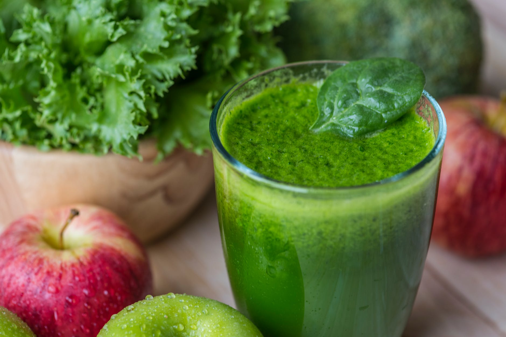

La Ciudad de Colima
Naturalmente lo Mejor
Naturalmente lo Mejor
La Ciudad de Colima fue fundada por José Ramón Ramos Martínez "Don Pepe", quien trabajaba en un puesto de ventas de jugos y frutas. En 1950 decidió ir a la capital y comenzó con un pequeño establecimiento en Polanco que poco a poco fue creciendo ganándose el prestigio de tener los mejores jugos y frutas.
Con la llegada de modernización a México, La Ciudad de Colima se expande abriendo sucursales en las mejores ubicaciónes de la capital. El Sr. Elías Amkie compra la marca en los 90's manteniendo sobre todo la calidad de los productos ofrecidos.
Aguas
Jugos
Cocteles y Copas
Frutas
Verduras